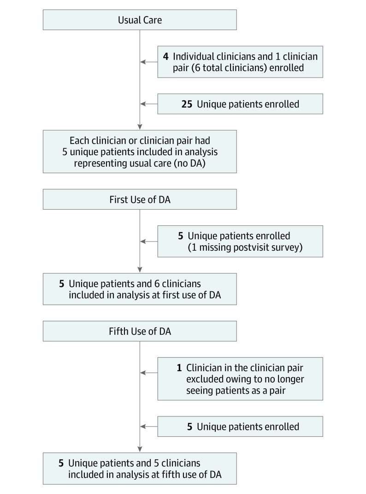

![]()


author: Coylewright M, O’Neill E, Sherman A, Gerling M, Adam K, Xu K, Grande S, Dauerman H, Dodge S, Sobti S, Saunders C, Schott S, Elwyn G, Durand M
Abstract:
Importance Shared decision-making (SDM) is widely advocated for patients with valvular heart disease yet is not integrated into the heart team model for patients with symptomatic aortic stenosis. Decision aids (DAs) have been shown to improve patient-centered outcomes and may facilitate SDM.
Objective To determine whether the repeated use of a DA by heart teams is associated with greater SDM, along with improved patient-centered outcomes and clinician attitudes about DAs.
Design, Setting, and Participants This mixed-methods study included a nonrandomized pre-post intervention and clinician interviews. It was conducted between April 30, 2015, and December 7, 2017, with quantitative analysis performed between January 12, 2017, and May 26, 2017, within 2 academic medical centers in northern New England among 35 patients with symptomatic aortic stenosis who were at high to prohibitive risk for surgery. The qualitative analysis was performed between August 6, 2018, and May 7, 2019. The Severe Aortic Stenosis Decision Aid was delivered by 6 clinicians, with patients choosing between transcatheter aortic valve replacement and medical management.
Main Outcomes and Measures Clinician SDM performance was measured using the Observer OPTION5 scale with dual-independent coding of audiotaped clinic visits. Previsit and postvisit surveys measured the patient’s knowledge, satisfaction, and decisional conflict. Audiotaped clinician interviews were coded, and qualitative thematic analysis was performed.
Results Six male clinicians and 35 patients (19 of 34 women [55.9%; 1 survey was missing]; mean [SD] age, 85.8 [7.8] years) participated in the study. Shared decision-making increased stepwise with repeated use of the DA (mean [SD] Observer OPTION5 scores: usual care, 17.9 [7.6]; first use of a DA, 60.5 [30.9]; fifth use of a DA, 79.0 [8.4]; P < .001 for comparison between usual care and fifth use of DA). Multiple uses of the DA were associated with increased patient knowledge (mean difference, 18.0%; 95% CI, 1.2%-34.8%; P = .04) and satisfaction (mean difference, 6.7%; 95% CI, 2.5%-10.8%; P = .01) but not decisional conflict (mean [SD]: usual care, 96.0% [9.4%]; first use of DA, 93.8% [12.5%]; fifth use of DA, 95.0% [11.2%]; P = .60). Qualitative analysis of clinicians’ interviews revealed that clinicians perceived that they used an SDM approach without DAs and that the DA was not well understood by elderly patients. There was infrequent values clarification or discussion of stroke risk.
Conclusion and Relevance In a mixed-methods pilot study, use of a DA for severe aortic stenosis by heart team clinicians was associated with improved SDM and patient-centered outcomes. However, in qualitative interviews, heart team clinicians did not perceive a significant benefit of the DA, and therefore sustained implementation is unlikely. This pilot study of SDM clarifies new research directions for heart teams.